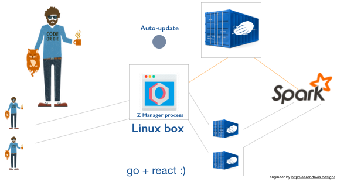

Zeppelin Multitenancy
In organization, it is not feaseble to make all users install and configure Zeppelin. Zeppelin Multitenancy feature allows you to have a single URL where all users go to get their own, containerized version of Zeppelin, utilizing resources of the shared cluster. Moreover, it will make using Zeppelin with ZeppelinHub easy in multi-user environment.

Note: This is Beta, for now only Spark Standalone is supported.
For the further informtation about Zeppelin Multitenancy, please visit Zeppelin Multitenancy github repository.